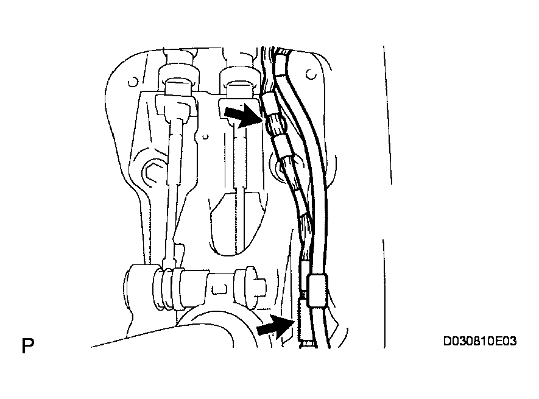
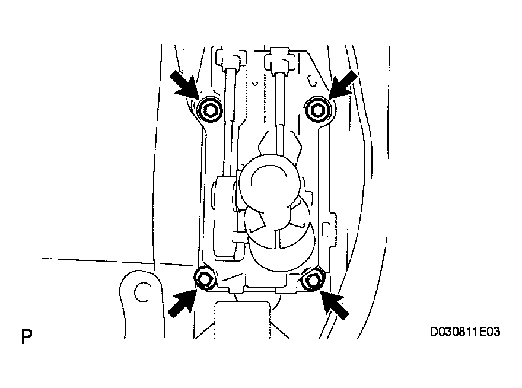
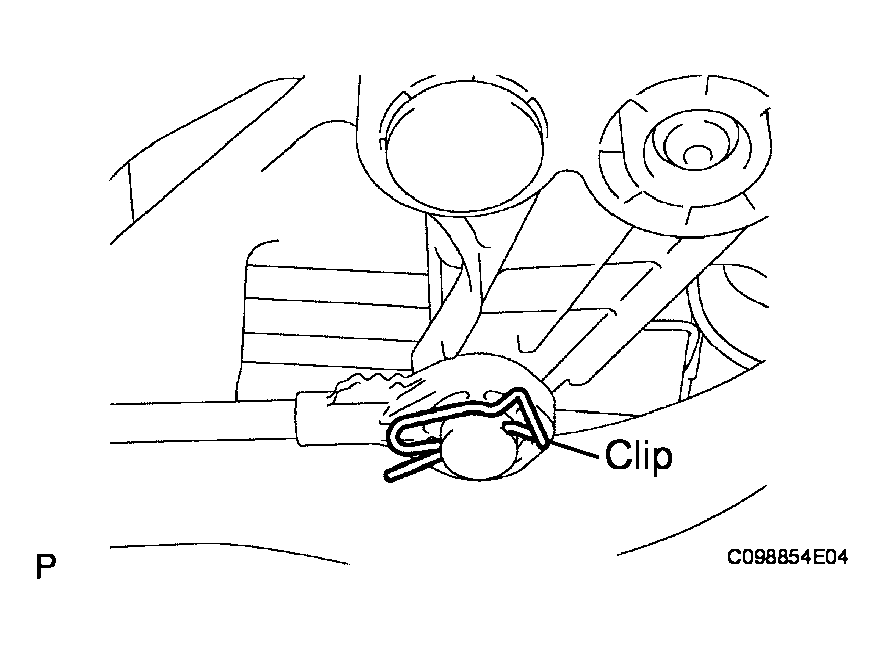
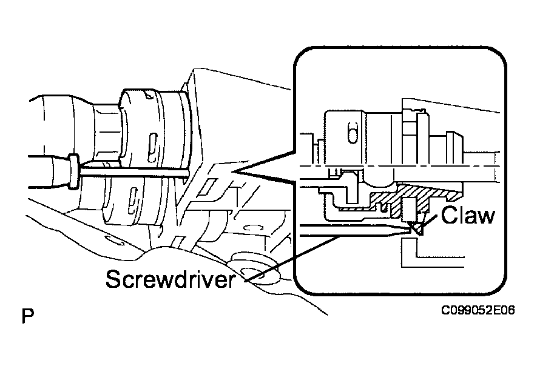
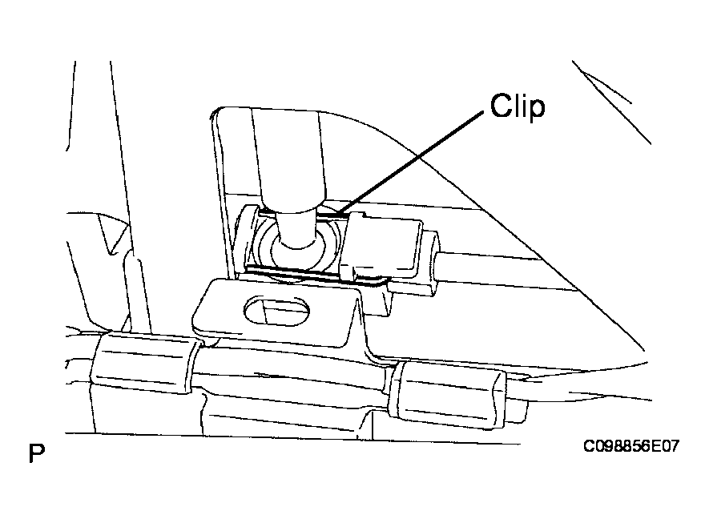
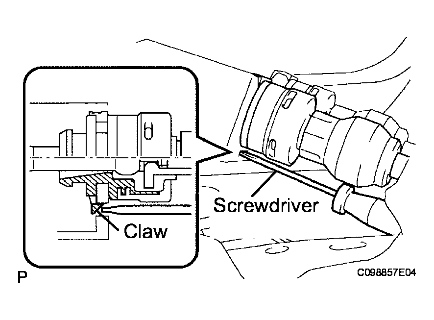
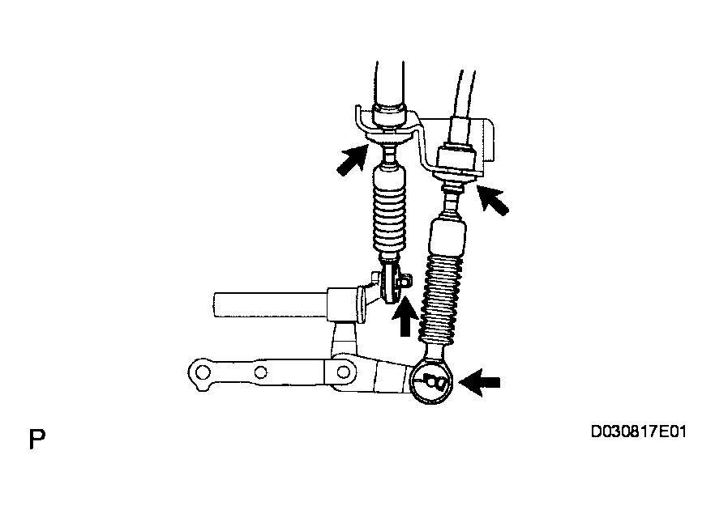
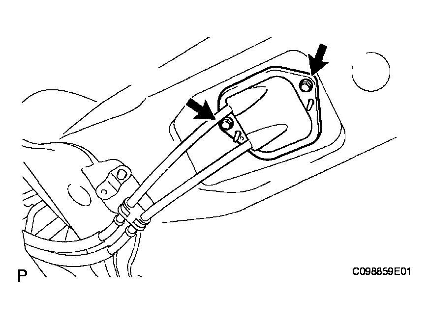
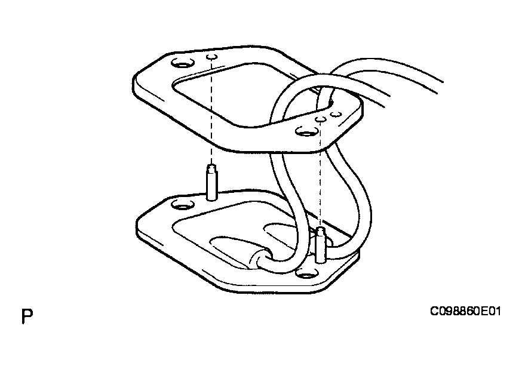
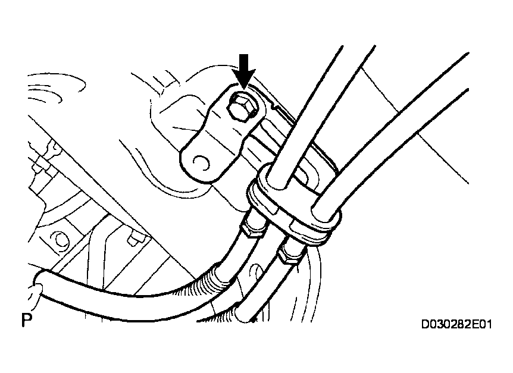

Transmission Control Cable: Removal
- REMOVE FRONT NO. 1 FLOOR HEAT INSULATOR
- REMOVE SHIFT LEVER KNOB SUB-ASSEMBLY
- Remove the shift lever knob (See
REMOVAL
).
- REMOVE REAR CONSOLE BOX ASSEMBLY
- Remove the rear console box (See
REMOVAL
).
- DISCONNECT FLOOR SHIFT LEVER ASSEMBLY
- Disconnect the wire harness.

Courtesy of © TOYOTA, LICENSE AGREEMENT TMS1002
- Remove the 4 bolts and disconnect the floor shift lever.

Courtesy of © TOYOTA, LICENSE AGREEMENT TMS1002
- REMOVE TRANSMISSION CONTROL CABLE ASSEMBLY
- Remove the clip, and disconnect the cable end of the transmission control select cable from the floor shift lever.

Courtesy of © TOYOTA, LICENSE AGREEMENT TMS1002
- Using a screwdriver, detach the claw.
- Disconnect the transmission control select cable from the shift lever retainer.

Courtesy of © TOYOTA, LICENSE AGREEMENT TMS1002
- Remove the clip, and disconnect the cable end of the transmission control shift cable from the floor shift lever.

Courtesy of © TOYOTA, LICENSE AGREEMENT TMS1002
- Using a screwdriver, detach the claw.
- Disconnect the transmission control shift cable from the shift lever retainer.

Courtesy of © TOYOTA, LICENSE AGREEMENT TMS1002
- Remove the 2 clips and 2 washers, and disconnect the 2 cables from the manual transaxle.
- Remove the 2 clips, and disconnect the 2 cables from the control cable bracket.

Courtesy of © TOYOTA, LICENSE AGREEMENT TMS1002
- Remove the 2 bolts and retainer from the floor.

Courtesy of © TOYOTA, LICENSE AGREEMENT TMS1002
- Remove the retainer from the grommet.
- Remove the transmission control select cable from the grommet.

Courtesy of © TOYOTA, LICENSE AGREEMENT TMS1002
- Remove the bolt and clamp.
- Pull out the transmission control select cable and transmission control shift cable through the floor hole.

Courtesy of © TOYOTA, LICENSE AGREEMENT TMS1002